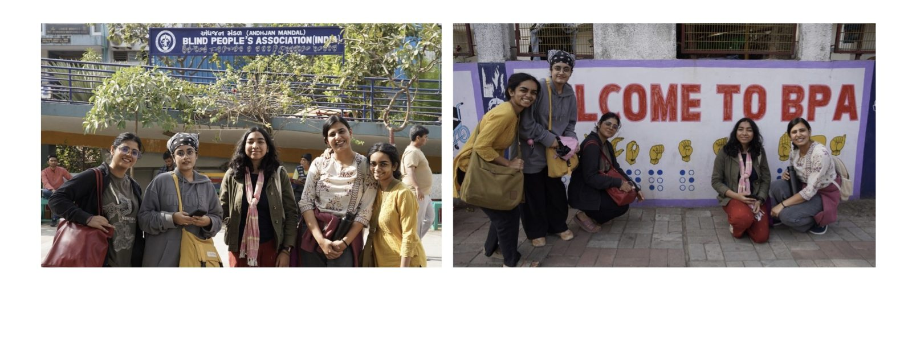
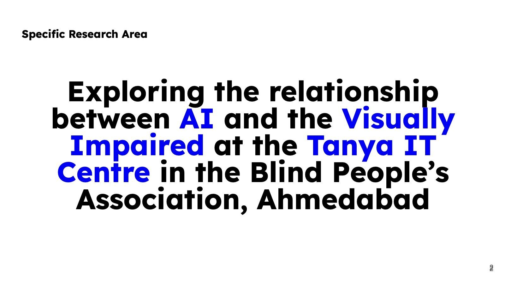
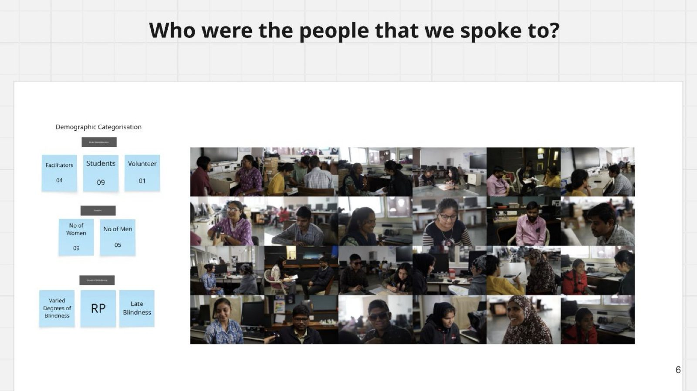
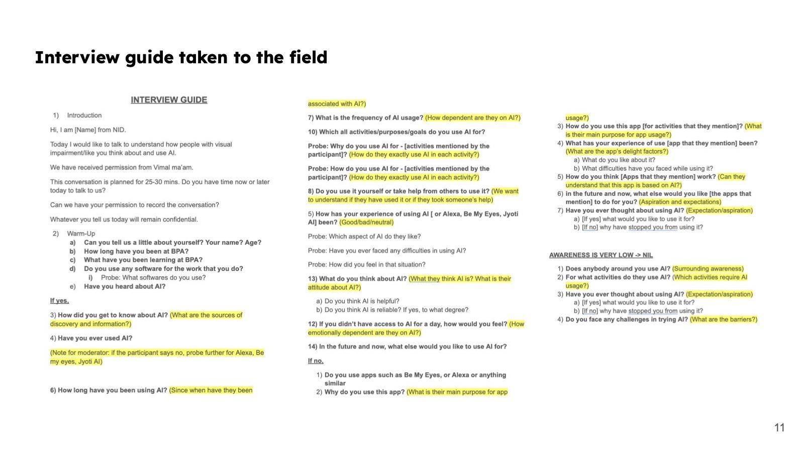
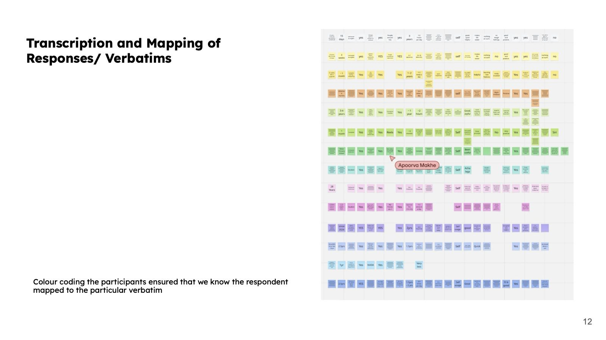
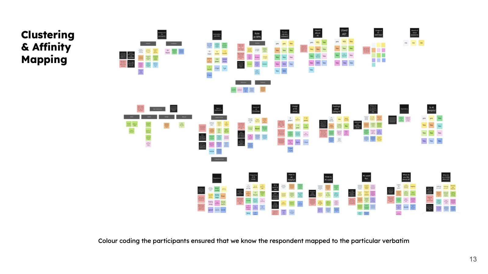
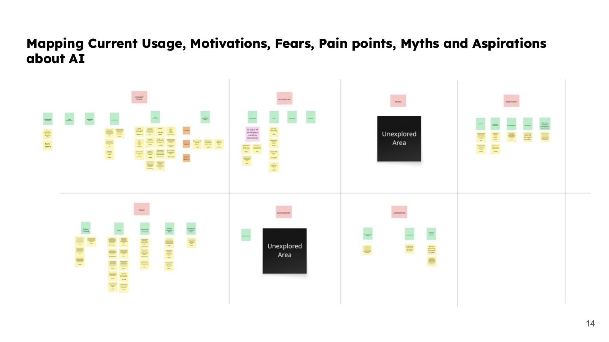
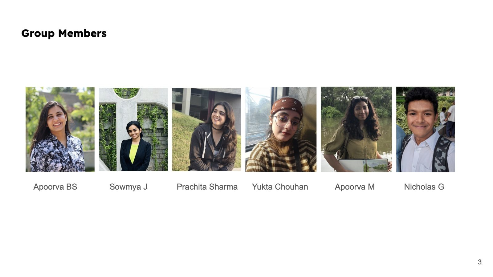

Design research · Research Methodologies, NID
People & AI
Exploring the relationship between AI and the visually impaired at the Tanya IT Centre, Blind People’s Association, Ahmedabad.

How do people who are visually impaired actually live with AI?
We wanted to understand how AI shows up in everyday life for people who are visually impaired: what they use, why they use it, what frustrates them and what they hope for.
Our research location was the Blind People’s Association in Ahmedabad, with the Tanya IT Centre as our boundary: a place where people come to learn computers, English and Braille.

Fourteen conversations at BPA
We interviewed fourteen people aged 19 to 37: course facilitators, a Braille expert, a museum coordinator, a volunteer and students. Most were studying in the humanities and taking computer and English classes after college hours.
Our interview guide went through two versions, with a change log, as we learned what worked in the room.


From verbatims to patterns
We transcribed every response and colour-coded each participant, so every verbatim could be traced back to the person who said it. We then clustered them into an affinity map, and mapped current usage, motivations, fears, pain points, myths and aspirations about AI.



Key findings
- Most participants use Gemini as their main AI app; Gemini and ChatGPT are the most popular.
- Everyone studying computers uses NVDA and TalkBack screen readers.
- Voice prompts are preferred over typed prompts.
- AI is used as a replacement for the browser, for travelling independently, navigation, read-aloud and image recognition.
- AI is used daily, even though fears about privacy exist.
- Quick responses and convenience are the most liked features.
- Access to AI in vernacular languages is a common concern, as is using it where the network is unreliable.
- Drafting and translating prompts is difficult; long, vague or misread answers cause confusion and irritation.
- People hope for full AI assistance that replaces human dependency, colour detection and easy navigation.
Layering the findings
AI is intuitively discoverable
Everyone found their AI apps through YouTube, reels or friends.
Prompting carries a load
Long, vague or misinterpreted responses lead to irritation, fatigue and doubt.
Access beats brand
Gemini is preferred because live voice, image recognition, translation and screen-reader support outweigh brand trust.
Access, not inclusion
People need local languages, struggle with English responses and depend on translation.
More than assistive
AI builds confidence and participation, even alongside reliability worries and frustration.
Friction over dependence
Users tolerate friction to avoid the alternative: depending on other people.
What fieldwork taught us
- Fluency in the language spoken by the respondents is non-negotiable.
- Preconceived notions or biases about respondents can hinder fieldwork.
- Choose vocabulary that puts people at ease without losing the essence of the question.
- Give people space to reflect, and show a receiving attitude through tone and body language.
- Knowing the space and the respondents beforehand is critical to a good questionnaire.
- Work with data gaps and conflicting responses to capture the real picture.
